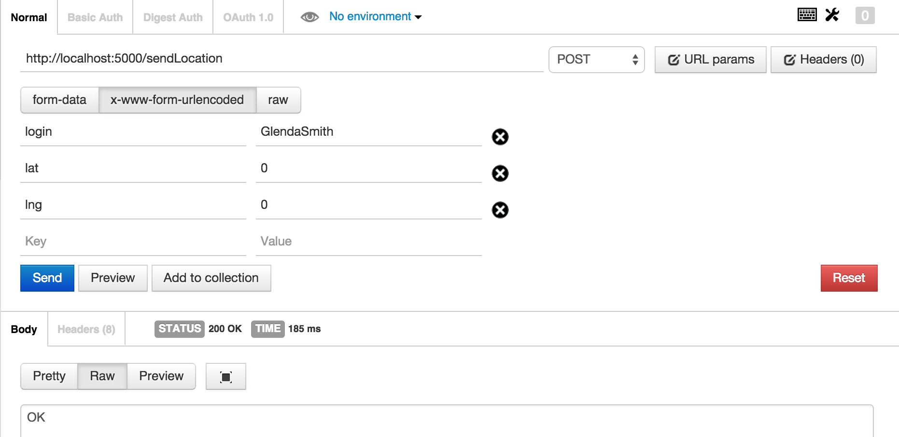

This assessment details my hired investigation into the security of a two-part web application prepared by Aaron Kahen.
Each half of the web application is detailed below:
Prepared according to the specifications detailed by client in COMP 20 Assignment 2 , the Marauder's Map is a product which determines a user's location via geolocation and posts it to an API which responds with the usernames and locations of all other users currently in the database. The product then displays the locations of all people in the datastore (including the user) on a map.
The implementation of the aforementioned API and datastore, prepared to client requirements outlined in COMP 20 Assignment 3 . The API offers the posting of user locations, the retrieval of a given user's location (or all users' locations if a succesful user post location is made), and a web interface for observing all current locations of users as well as the time they last checked in.
Cumulatively, the products combine to create an application akin to the namesake of this project: the Marauder's Map (of the popular Harry Potter novels).
This report seeks to answer two key questions about this product:
Is it ready to be deployed?
If not, what are its potential security vulnerabilities? What can we do to fix these?
The product was tested in the following steps:
Attacks were first conducted while treating the product as a "black box", simulating a hacker's blind attempts at clubbing the product into submission.
Then, after battering the product exhaustively, a peep inside the "black box" was taken. After, sifting through the product's source code, more nuanced, precise attacks on certain mechanisms were taken.
The tools used to conduct testing were cURL, the POSTMAN Chrome Extension (used to display the results intially tested in cURL), and Tamper Data, a Firefox extension that allows users to "view and modify HTTP/HTTPS headers and post parameters."
Over the course of testing, numerous security vulnerabilities in the application were discovered. As such, the application is not recommended for public deployment.
Due to a misguided faith in the sanctity of users, this web application is open to a variety of attacks ranging from malicious attacks cross site script (XSS) injections which could crash the user's browser, redirect to a malicious page, and more depending on the hacker's whim - to more benign, but still nonetheless inconvenient attacks - server-side injection attacks which could crash the datastore's server, forcing a manual restart on the part of the application owner before anyone could use the application again.
Other security flaws harbor the potential to evolve from benign attacks to malicious attacks depending on the manner in which the site is utilized. Hackers can spoof their own locations as well as alter the locations of others in the datastore, actions that could quickly become problematic if the accuracy of the location data in the datastore becomes important.
These errors are not without their solutions, however. The next section details our findings and some potential remedies.
The issues are presented in order of security risk, from high to low.
Risk Level: High
Impact: The attack can load new elements onto the server homepage (GET '/' API). These elements can vary from images to pop-ups to redirects to other potentially malicious website, making the homepage a magnet for malware and annoying ads.
Location: the POST API
Description:
Because the application blindly trusts user inputs, this makes it suceptible to cross-site scripting. Malicious users could inject snippets of Javascript or HTMl in place of logical entires in fields in the POST API. When the GET API is subsequently rendered, the malicious code would then be loaded onto the website as well, executing to the detriment of the site's user.
For example, let's assume we enter three simple CURL commands:
The following is the result:
Resolution:
We need a method that can somehow filter out code - or at the very least, prevent it from executing. A few techniques immediately spring to mind.
As a first line of defense, when rendering the GET '/' API page, we can parse all user entered data that we are about to display on the page. Upon encountering any < or > signs, we can replace them with their HTML equivalents - < and < - preventing any code snippets from executing. While browsers may treat
as code,
will certainly not be interpreted as code.
This will resolve the initial issue presented with the GET '/' API.
But what if other people use other forms of the GET API? What if they want to list the data on their websites? We should try to protect them too. This requires another solution; after all, we can't just force our way into their webpage and escape characters for them! To combat this problem, we have to cleanse the source of the problem (and their webpages): the data stored in the server.
One method of cleaning entries to the database is simply to bar certain characters - namely < and > - from being stored in the database. This would require a string parsing that filtered out these characters from all user inputs. For this most secure solution, this script would have to run on the database side - a necessary middle man guarding the database from user input. Such a scipt in Javascript might look like:
To retroactively remove flaw entries that may have been stored in the past - before this security review - another easy function that traverses each item in the database, retrieves its original fields, filters using the script above, and then updates the entry could be written and utilized.
With a redunant set of security infrastructure in place for guarding against XSS injections in the past and future, we can now move on to other security risks.
Risk Level: Medium
Impact: User privacy - the attack returns all of fields stored for the first user in the datastore.
Location: the GET API
Description:
After sifting through the code written for the server-side implementation of the Marauder's Map, I noticed that there was no parsing done on input to the GET /location.json API; rather, the server simply took the input parameters and blindly queried the Mongo database with them. As such, I conducted an attack which took advantage of this fact.
A simple GET request for 'login[$ne]=' which should have failed with invalid parameters instead succeeded, returning all of the information for the first user in the datastore: GlendaSmith.
A Helpful Side Note: the snippet of code 'login[$ne]=' executes as the GET API queries the Mongo database with the unsanatized input. Rather than the server searching for a login the matches a particular name, the '[$ne]' portion of the request instead forces the server to search for logins that don't match a given string - in this attack, the empty string.
Resolution:
Resolving this problem is rather simple - sanatizing the GET API's input - but highlights a larger big idea.
Earlier, we saw the necessity of warding off XSS injections by santizing the POST API's input. Here again, we see vulnerabilities when other forms of input are not santized. Overall, when creating any web application, it is never wise to trust the user; all instances of input should be sanatized to best protect against vulnerabilities.
While the earlier fix was to filter out < and > symbols, here, we must filter out the $ character. There are two possible approaches to doing so.
The first is to keep the parsing functions seperate, filtering out < and > in the POST API and then writing a seperate function (see below for an example) to parse the GET API's input.
Or, for more reusable code, we could parse all input through one function that filtered out characters such as <, >, and $. For a more offensive rather than defensive approach, we could even rework this function so that it only allowed through alphanumeric characters, banning all special characters.
Regardless or the method of resolution, a key guideline to any future expansions of the application remains: always santize any form of input!
(Another way to combat this problem would be to modify the return of the GET API. Rather than just returning all of the information associated with an entry in the database, we could just return the relevant, public fields - login, latitude, longitude.)
Additional Notes:
Though this isn't particularly dangerous now - after all, all information in the datastore is publically accessible through the GET '/' API already - this poses a risk in case the client ever decides to host additional, sensitive and prive user information in the datastore.
The attack also violates the fundamental concept of the GET API: it should only return an entry if a valid login is presented.
It is also worth noting that this attack could have been much worse than it actually was. Because the server query was programmed with the Mongo 'findOne' method instead of a blanket 'find' call, this vulnerability will only ever return the first user in the database. Had the blanket 'find' call been used, this vulnerability would have exposed all user information in the entire database.
Risk Level: Low
Impact: Inaccurate user location information.
Location: the Marauder's Map homepage (index.html)
Description:
Because the user submits their own location (via the Marauder's Map homepage's use of geolocation), this opens the process to tampering. Using a simple extension such as Tamper Data for Firefox, we could lead the server to believe we were halfway around the world in Paris while we sit here comfortable in Boston. (Or we could even just use cURL to post an erroneous location to the server directly using the POST API.)
Futhermore, after the returned map lists all of the user ID's of individuals in the datastore, we would be able to then go in and modify each of these entries using the same technique. When Tampering the POST data, we could replace our username with these other usernames, updating their locations to false locations as well. (Or again, we could just use cURL to post erreneous locations for these users.)
Resolution:
Resolving the spoofing of others' locations is simple. In addition to giving each individual participating in this project a username, give them a secret or password. When using the POST API, the server could check each username against its secret, ensuring that the post was from a valid source. (The method of comparison would likely be through some salting and then hashing.)
Resolving the spoofing of the user's location, however, is signficantly harder. After all, the user would know their own key and whatever geolocation service we use has to operate on the client side - there's no way to magically tell from the comfort of our server where all the users are.
I'm honestly not sure if there is a solution to this problem. Relying on some comparison between the user's produced geolocation and the user's IP address to determine the validity of data initially seems promising, but then again spoofing an IP address by using a proxy presents a relatively easy workaround.
The application could also request a picture of the user's location and compare that to the views available from Google Street View. However, this again could be faked; the user could just take a photo of another photo of the spoofed location.
Perhaps the best advice on this problem may just be best to trust each user's location with a grain of salt - a mantra that undermines the overall tenets and utility of the Marauder's Map application, reducing it to a novel application with no real utility.
Additional Notes:
It is worth noting that as we attempt to reinforce the security of the site, removing malicious user's abilities to access the private information of other users, at its core, the Marauder's Map application and server run antithetical to this practice. After all, they provide a map designed to track all of its users . Just something to keep in mind.
Due to the previously discussed security vulnerabilities, I have concluded that the site is not ready for deployment .
Luckily all of the fixes above are quite simple and present additional guidelines to keep in mind if the scope of the project and its facilities is expanded.
Even after these issues are resolved, however, a number of other issues have been raised that question the overall utility of the application. Because users can supply the server with inaccurate data, the crux of the application's utility is placed in question. Though it may be useful as a coding exercise, the application unfortunately holds little real world utility.